Name: Prakash Singh
UoN ID: 18417134
GitHub url:-https://
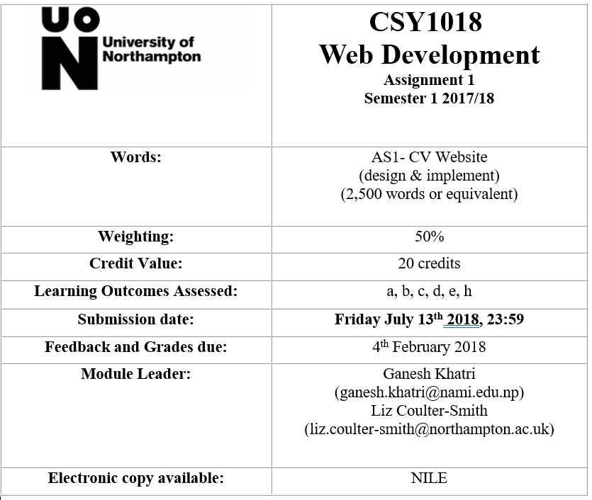
Table of content
1. Introduction
2. My Experience
3. UI design
4. Wireframes
5. Screen Mockup
6. Testing
7. Conclusions
8. References
Introduction: -
I am an honorable student from science field. I am a new student in this field so that I have totally new experience for the project. This is also my first webpage while doing this project. I faced many problems. This is my first time to learn HTML and CSS. So that I am in trouble by facing many problems for sometimes but by the help of teacher, internet and friends to solved it. All the credit goes to the thankful teachers and friends. Continuously doing the hardworking for learning in this module (HTML AND CSS). That’s totally changes my view with new ideas towards the web.
After doing hardworking in this module I can face problems and able to be done task at that time as well as I can easily make basic web-page by using different kinds of technique. For this assignment I take helps from internet, teacher, friends etc. My teacher also plays vital role for this module. They are always ready for helps us to solve the problems and gives feedback for the development of this project. The group discussion can also share ideas, knowledge for each member for the development of the project. All the team’s members are helpful, hard worker, friendly and co-operative. I worked with team’s members and get help, ideas from the team’s members for work design. This team’s works have helped me a lot to making designing of my wireframes. Hardworking and spending amazing time with my team’s members are awesome moments as well as creative and make me self-confident.
UI Design:-
To make the attractive and user-friendly webpage, I researched or visited many online websites. For the searching process I found many websites which are attractive, user-friendly and responsive. In my webpage the influence of this sites can be seen. It is very difficult to finalize design. Due to the different types design, ideas and UI interface had many advantages and dis-advantages. So that I planned to make the better design, attractive and responsible webpage. Here are some screenshots that was influence by:
website of the Nami college i.e. http://nami.edu.np/
This is a screenshot of Nami college in Nepal.
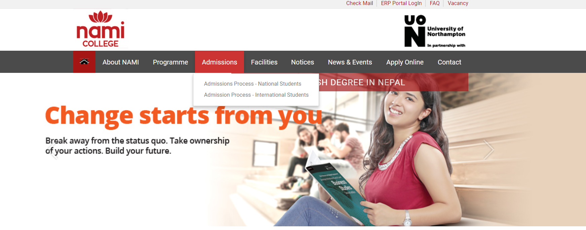
website of British college i.e. https://www.thebritishcollege.edu.np/
This is a screenshot of British College in Kathmandu Nepal.
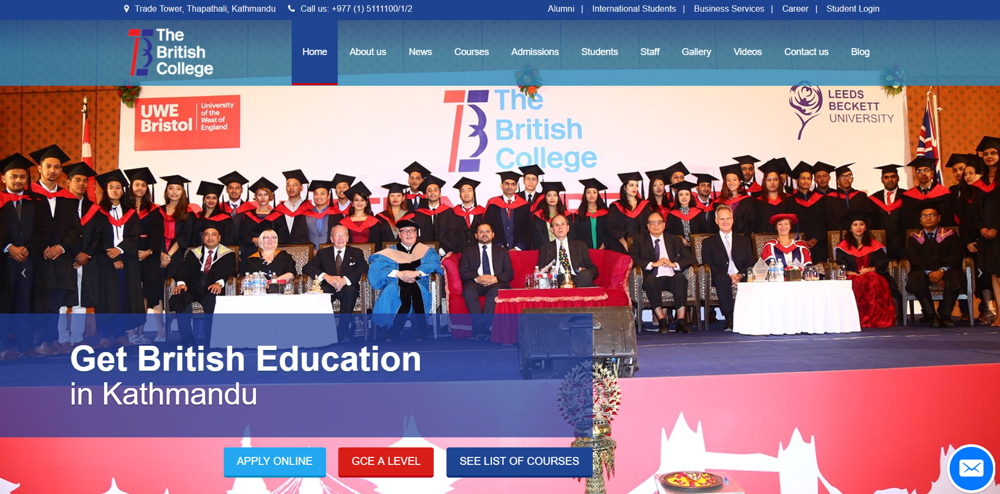
Wireframes: -
The wireframe of my web-page that was developed by me after visiting many websites.
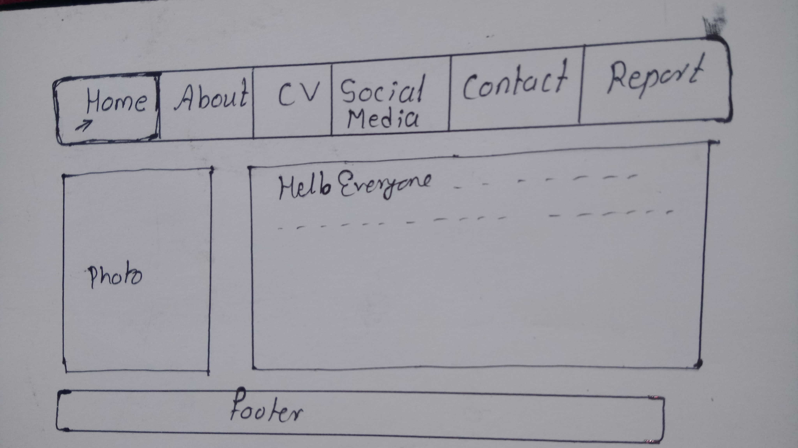
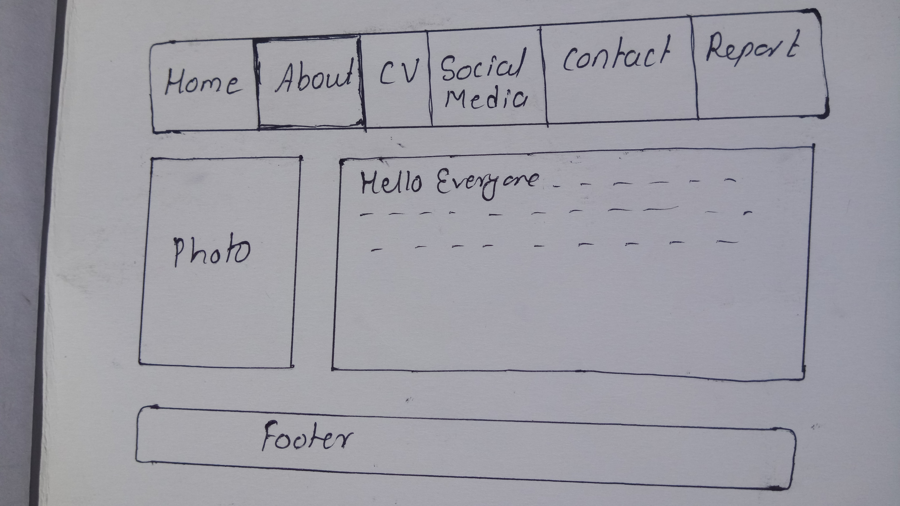
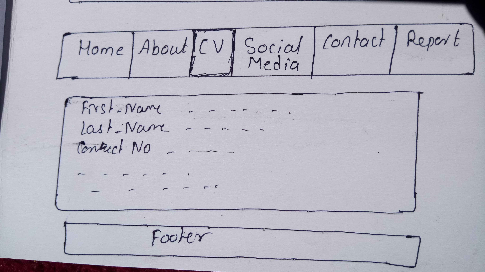
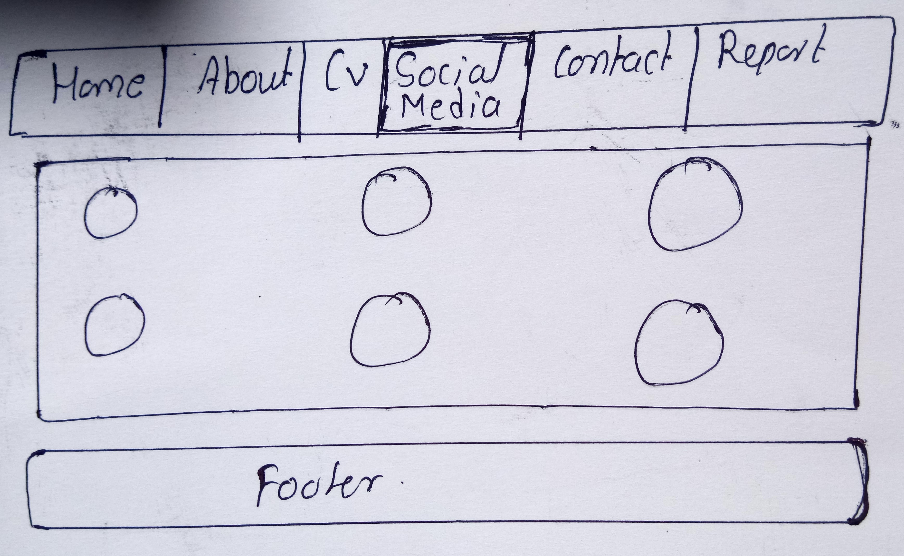
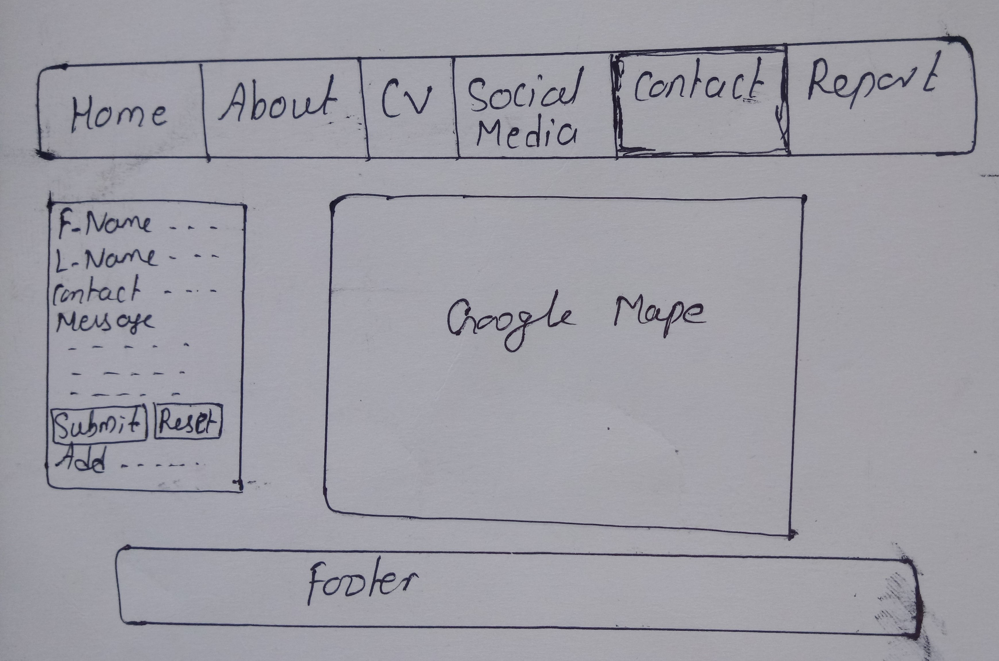
Mockups:-
After completing wireframes of my website designed and final screenshots are given below :-
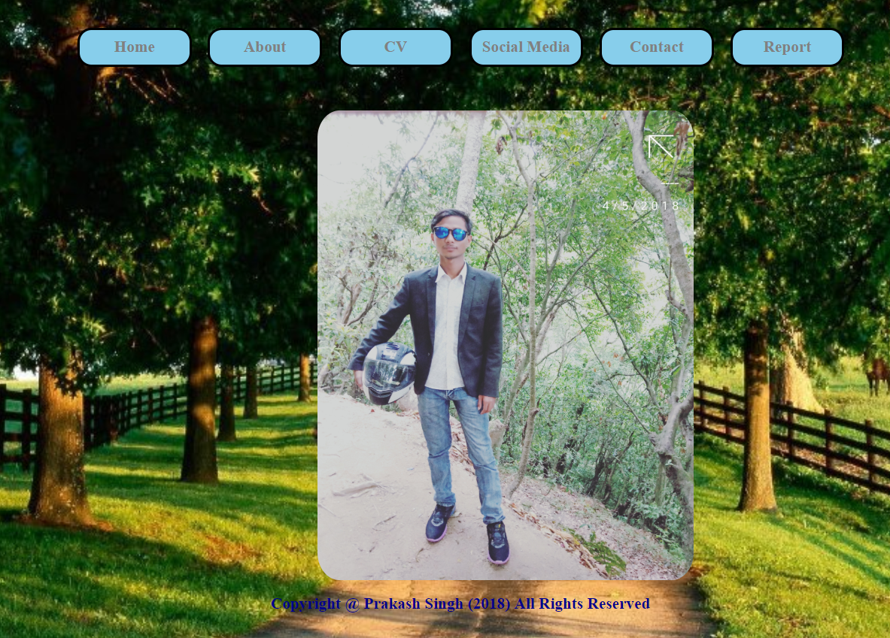
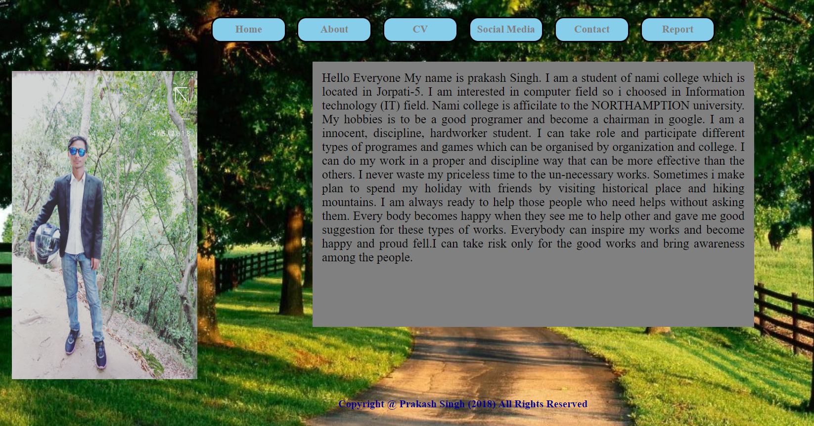
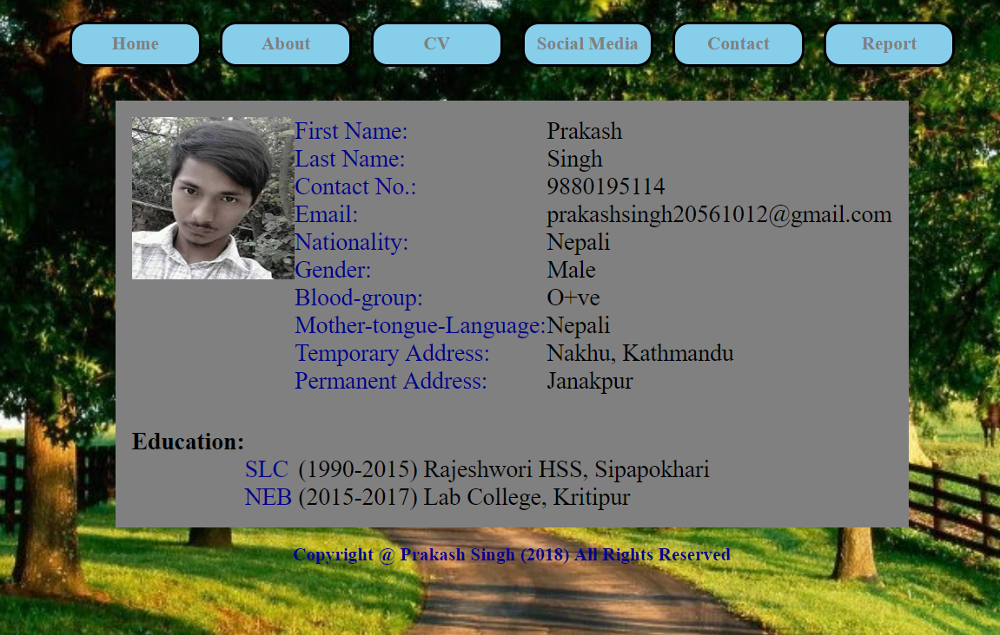
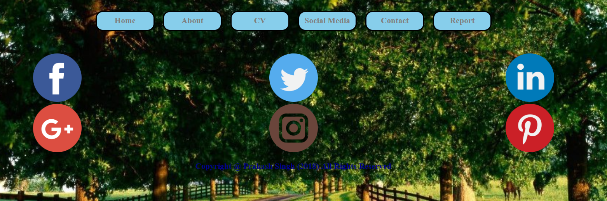
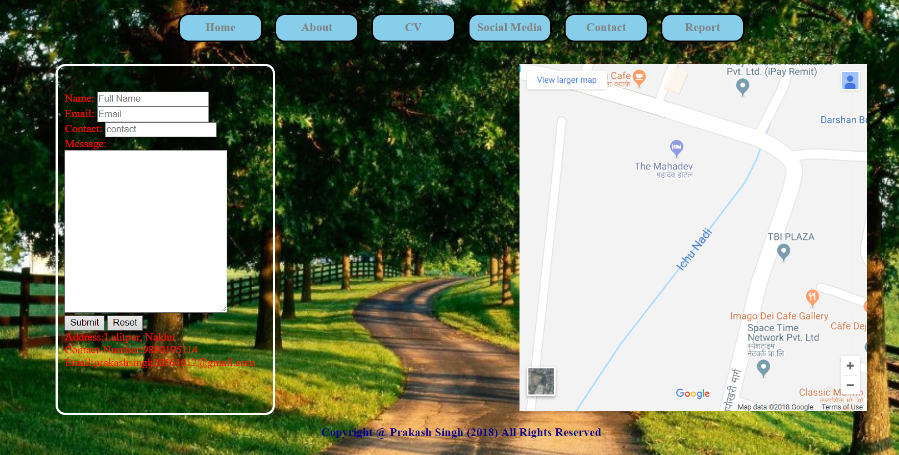
TESTING:-
I tested my all the files in the w3 school validator and here are the screenshots.
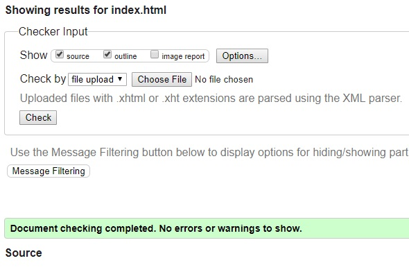
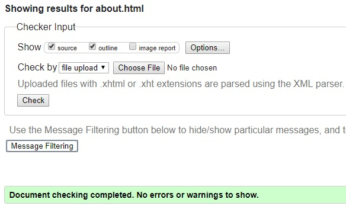
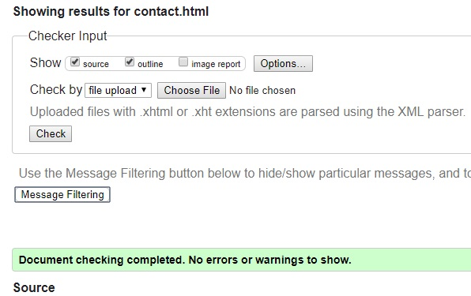

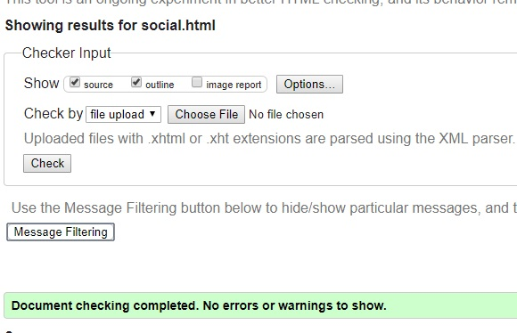
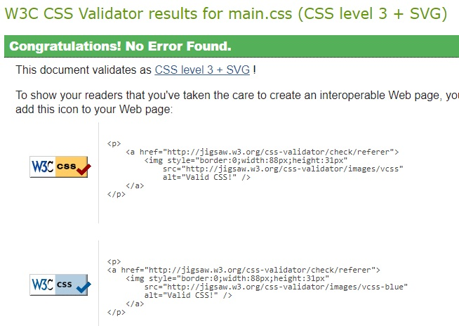
CONCLUSIONS:-
Doing this assignment, I faced many problems and finally came with solution. While facing problems and solving it, I have get a chance to learn new things about this module (HTML and CSS). New types of tackled helps to increase curiosity to do many projects in the further as well as I will do my best in this type of assignment.
REFERENCES:-
W3schools.com. (2018). CSS Tutorial. [online] Available at: https://www.w3schools.com/css/ [Accessed 13 Jul. 2018].
CodePen. (2018). Slideshow, CSS only. [online] Available at: https://codepen.io/daysahead/pen/mJqBge [Accessed 13 Jul. 2018].
CSS-Tricks. (2018). CSS-Tricks. [online] Available at: https://css-tricks.com [Accessed 13 Jul. 2018].
Flaticon. (2018). Flaticon, the largest database of free vector icons. [online] Available at: https://www.flaticon.com/ [Accessed 13 Jul. 2018].